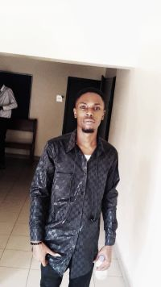

WELCOME TO LORDLAWSON SITE
IWUAGWU LAWSON CHIMDIA | WDD 130
IWUAGWU LAWSON CHIMDIA | WDD 130

Hi my name is Iwuagwu Lawson chimdia, I'm in my early twenties (20s). I'm from Nigeria in Africa I'm a member of the church of Jesus Christ of latter day saints infect I'm a child of record that's to say I was born in the church. I'm the first born and I have three siblings two boys and one girl. I'm a science student, I love exploring new things, playing high top games like football,CoD and God of war) lol, don't mind me saying all that, also I'm a free minded person with growth mindset. I love improving and learning. I'm not scared of anything new. I love sharing and reading the scriptures. I love the prophets. I create a healthy and funny atmosphere anywhere I'm. I got a good reputation. 🏳 I love exercising and also love eating but not much. I love technology especially programming .😍 This a little about my bio.